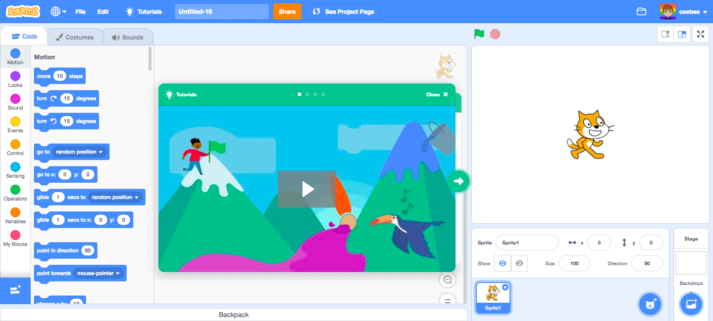

Scratch is a block-based visual programming language and online community targeted primarily at children. Users of the site can create online projects using a block-like interface. The service is developed by the MIT Media Lab, has been translated into 70+ languages, and is used in most parts of the world. Scratch is taught and used in after-school centers, schools, and colleges, as well as other public knowledge institutions. As of May 2019, community statistics on the language's official website show more than 40 million projects shared by over 40 million users, and almost 40 million monthly website visits.
Scratch takes its name from a technique used by disk jockeys called "scratching", where vinyl records are clipped together and manipulated on a turntable to produce different sound effects and music. Like scratching, the website lets users mix together different media (including graphics, sound, and other programs) in creative ways by "remixing" projects.
The Scratch interface has three main sections: a stage area, blocks palette, and a coding area to place and arrange the blocks into runnable scripts.
The stage area features the results (i.e., animations, turtle graphics, etc., either in a small or normal size, with a full-screen option also available) and all sprites thumbnails being listed in the bottom area. The stage uses x and y coordinates, with 0,0 being the stage center.
With a sprite selected at the bottom of the staging area, blocks of commands can be applied to it by dragging them from the blocks palette into the coding area. The Costumes tab allows users can change the look of the sprite in order to create various effects, including animation. The Sounds tab allows attaching sounds and music to a sprite.
When creating sprites and backgrounds, users can draw their own sprite manually, choose a Sprite from a library, or upload an existing image.
An offline "desktop editor" is available for Microsoft Windows 10 and Apple's macOS 10.13; this allows the creation and playing of scratch programs locally, without an Internet connection.
In Scratch, extensions add extra blocks and features that can be used in projects. In Scratch 2.0, the extensions were all hardware-based. Software-based extensions were added in Scratch 3.0, such as text-to-speech voices, along with some new hardware-based extensions like the micro:bit.
Many of the digital extensions in Scratch 3.0 used to be regular block categories that were moved to the extensions section to reduce clutter. These include:
New digital extensions have also been added in collaborations with commercial companies. These include:
Users can also create their own extensions for Scratch 3.0 using JavaScript.
Scratch 3.x is a completely new JavaScript-based code base made up of multiple components such as "Scratch-GUI", now based on a library from Blockly, "Scratch-VM", which interprets code, and "Scratch-Render", the rendering engine. The Scratch Blocks are made using Blockly.
Scratch is used in many different settings: schools, museums, libraries, community centers, and homes. Although Scratch's main user age group is 8–18 years of age, Scratch has also been created for educators and parents. This wide outreach has created many surrounding communities, both physical and digital.
Scratch is popular in the United Kingdom and United States through Code Clubs. Scratch is used as the introductory language because the creation of interesting programs is relatively easy, and skills learned can be applied to other programming languages such as
Scratch is not exclusively for creating games. With the provided visuals, programmers can create animations, text, stories, music, and more. There are already many programs which students can use to learn topics in math, history, and even photography. Scratch allows teachers to create conceptual and visual lessons and science lab assignments with animations that help visualize difficult concepts. Within the social sciences, instructors can create quizzes, games, and tutorials with interactive elements. Using Scratch allows young people to understand the logic of programming and how to creatively build and collaborate.
Scratch is taught to more than 800 schools and 70 colleges of DAV organization in India and across the world.
In higher education, Scratch is used in the first week of Harvard University's CS50 introductory computer science course.
On Scratch, members have the capability to share their projects and get feedback. Projects can be uploaded directly from the development environment to the Scratch website and any member of the community can download the full source code to study or to remix into new projects. Members can also create project studios, comment, tag, favorite, and "love" others' projects, follow other members to see their projects and activity, and share ideas. Projects range from games to animations to practical tools. Additionally, to encourage creation and sharing amongst users, the website frequently establishes "Scratch Design Studio" challenges.
The MIT Scratch Team works to ensure that this community maintains a friendly and respectful environment for all people.
Educators have their own online community for called ScratchEd, developed and supported by the Harvard Graduate School of Education. In this community, Scratch educators share stories, exchange resources, and ask questions.
The Scratch Wiki is a support resource for Scratch and its website, history, and phenomena surrounding it. Although supported by the Scratch Team (developers of Scratch), it is primarily written by Scratchers (users of Scratch) for information regarding projects and things that interest users.
Scratch Educators can gather in person at Scratch Educator Meetups. At these gatherings, Scratch Educators learn from each other and share ideas and strategies that support computational creativity.
An annual "Scratch Day" is declared in May each year. Community members are encouraged to host an event on or around this day, large or small, that celebrates Scratch. These events are held worldwide, and a listing can be found on the Scratch Day website.